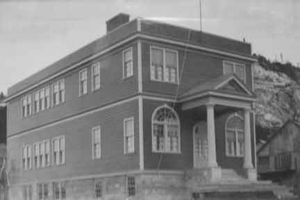
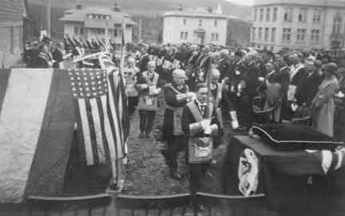
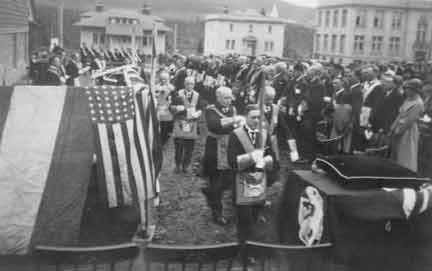
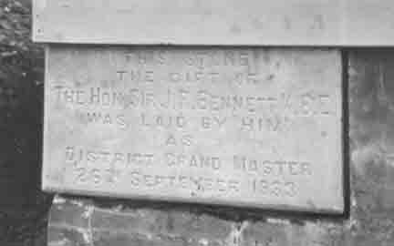
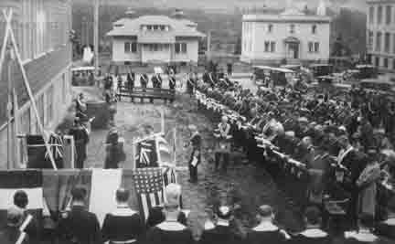

|
|
The following history was transcribed from the 75th Anniversary booklet (1926-2001) of Corner Brook Lodge No. 11 and West Gate Lodge No. 18.
The Building of the Temple
Bennett Hall
Well made, well proved, true and trusty, erected and dedicated to morality and virtue.
Corner Brook Lodge No.4832 E.C. was consecrated October 4,1926 by Rt. Wor. Bro. Sir John R. Bennett K.B.E. District Grand Master. After using many locations for meetings, the old town construction office on Park Street was rented from the paper Mill Company. The upper floor was strengthened and used as a Lodge Room.
The Lower floor was used as a clubroom. The building was very small and the temperature varied with the seasons. When not in use the building was sublet to other fraternal organizations. During the first three years of life, Corner Brook Lodge initiated sixty candidates and it soon became evident that a Masonic Temple worthy of the Craft was essential. A building committee consisting of thirty members and non-members of the Lodge was appointed by the Wor. Master Bro. J.C. Fitzgerald who became chairman of the Building committee in 1929, with Wor. Bro. J.G. Thistle, Secretary. Others on the committee were S.T. Baker, W.M. Balford, S.J. Blacker, A.L. Blackmore, S.R. Blair, A. Bradbury, S.D. Cook, W.N. Cornick, A.H. Curren, J.F. Davis, E.F. Ewing, T.A. Garcin, R. Geary, S.J. Goodyear, W. Herdman, T.S. Howard, M.A. Johns, W.A. King, Ben Lavin, A. Myrden, J.M. Palmer, M. Pickering, H. Piers, G. Randell, F.G.A. Randell, Jos. Roberts, L.R. Simmons, H. Small, D.M. Soper, Joe Stanford, H.T. Stone, P.G. Tipping and P.F. Weiss. The architect of the building was Mr. John Wells.
Construction started in 1932 and the building  was dedicated, free of debt, in September 1933 by Rt. Wor. Bro. Sir. John R. Bennett. There was no doubt that Sir John had a list of highlights in his Masonic Career and without doubt this event was one on top of his list. To celebrate the events, a Masonic Week was observed from September 23-29. It was on September 26th, 1933, at 11:30a.m. when a large number of invited guests were seated at the site of the corner stone. There was a large attendance of other residents and visitors. A detachment of the Church Lads Brigade under Capt. Randell marched to the place assigned to them. A procession of the brethren, other than those taking part in the ceremony, marched in full regalia and were seated at the site in regular order. After this came the officers and officials taking part in the ceremony, the Dist. Grand Master, preceded by the District Grand Sword bearer, with the District Grand Director of Ceremonies bringing up the rear. was dedicated, free of debt, in September 1933 by Rt. Wor. Bro. Sir. John R. Bennett. There was no doubt that Sir John had a list of highlights in his Masonic Career and without doubt this event was one on top of his list. To celebrate the events, a Masonic Week was observed from September 23-29. It was on September 26th, 1933, at 11:30a.m. when a large number of invited guests were seated at the site of the corner stone. There was a large attendance of other residents and visitors. A detachment of the Church Lads Brigade under Capt. Randell marched to the place assigned to them. A procession of the brethren, other than those taking part in the ceremony, marched in full regalia and were seated at the site in regular order. After this came the officers and officials taking part in the ceremony, the Dist. Grand Master, preceded by the District Grand Sword bearer, with the District Grand Director of Ceremonies bringing up the rear.
The beautiful ceremony of laying or placing the Corner Stone was then gone through with dignity and decorum. The stone was in position exactly at high noon when all stood at attention and the trumpeters of the C. L. B. detachment sounded the salute. The sun, which had been obscured for days previously, shone forth of the Temple. The buildings and surroundings were gaily decorated, and a most gratifying demonstration of this beautiful ceremony of dedication was carried out with the same dignity and splendor. The officers assigned their respective duties and did their part faultlessly and the splendid temple and building which became known as “Bennett Hall” was dedicated to Freemasonry and Universal Benevolence.
After the dedication ceremony a sumptuous dinner was served in the Magnificent Social Hall. Over one hundred were in attendance and the catering was all that could be desired. The floral decorations on the tables deserved special attention as they were done by the ladies and members of the Lodge. The speeches were well delivered and appropriate. With the singing of “God Save the King” a red letter day, not only for the members of Corner Brook Lodge but for the entire District, came to a happy ending.
The building, now completed and occupied, it became obvious that some administrative body would have to be established for control and maintenance. It was later agreed that a company be incorporated to be known as the Masonic Hall Company Limited. J. C. Fitzgerald was asked to be the first President, T. S. Howard Vice President while J. G. Thistle would be the secretary. The Directors would be Dr. W. J. Cocran, J. M. Cornick, S. J. Goodyear, W. Herdman, J. M. Palmer, A. L. Stanford and S. E. Williams.
Over the years considerable improvements have been made to the building so as to provide maximum service to the fraternity. The wood covering on the outside has been replaced with stone and brick. Complete renovations on the inside have taken place in order to bring the building up to modern standards. In the later years an elevator was added to assist the aging membership. The three floors now consist of a kitchen and dining area on the first floor, a banquet hall on the second floor, with the Temple and office space occupying the third floor. All this work could not have been performed without financial assistance of the “Bennett Hall Ladies Auxiliary” who have worked diligently over the years to raise money for this purpose.
As Masons, we are proud of our building and are happy to have been able to provide a home for those who may wish to seek the secrets and privileges of Freemasonry.
|